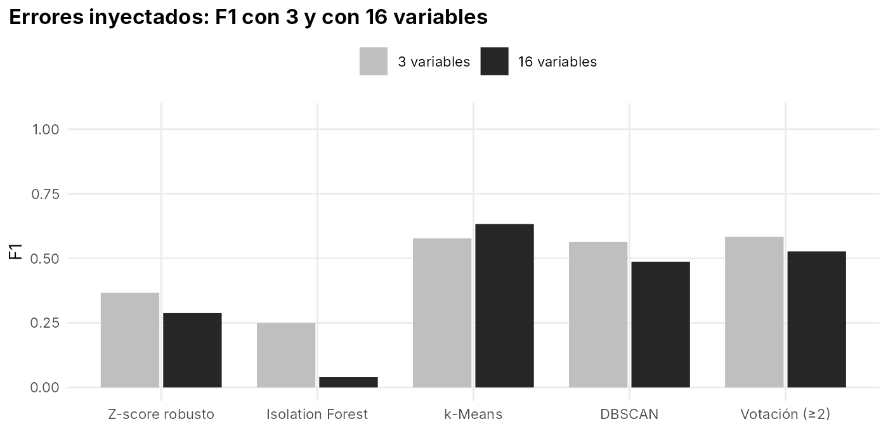
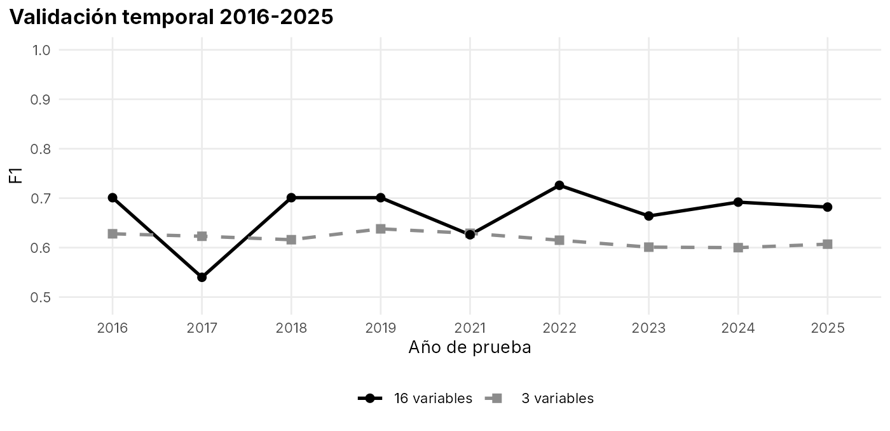

Código en R
Etapas 3 a 5 del análisis para ejecutar en RStudio
Cómo ejecutarlo
- Descargar o clonar el repositorio y abrir
ena-anomalias-2015-2025.Rprojen RStudio (así el directorio de trabajo queda en la raíz). - Abrir
scripts/R/ejecutar_todo.Ry pulsar Source. También se pueden correr00a05uno por uno; cada script carga lo que necesita si no está en memoria. - Las figuras se guardan en
figuras/R/y las tablas enresultados/R/.
La primera vez se instalan data.table, ggplot2, isotree, dbscan, cluster y readxl. R usa hasta unos 5 GB de RAM (conviene una computadora con 8 GB o más). Las etapas 3 y 4 tardan unos 5 minutos y la validación unos 25.
R parte de la base depositada (ena_2014_2025_productor.csv.gz), que ya está integrada y limpia. La lectura del SPSS de 14,7 GB y la limpieza (etapas 1 y 2) están en el notebook de Python.
| Etapa | Python | R |
|---|---|---|
| Variables | crear_variables, z_robusto |
mismas funciones en funciones.R (data.table) |
| Isolation Forest | sklearn.ensemble.IsolationForest |
isotree::isolation.forest(ndim = 1) |
| k-Means | sklearn.cluster.KMeans |
stats::kmeans |
| DBSCAN | sklearn.cluster.DBSCAN |
dbscan::kNNdist + núcleos + dbscan::kNN |
| Silueta | sklearn.metrics.silhouette_score |
cluster::silhouette |
| AUC | roc_auc_score |
auc_rangos (Mann-Whitney) |
Resultados de R frente a Python
Con la misma base, R marca 10 463 registros como anómalos (0,84 %), frente a 8 802 (0,70 %) en Python. Las diferencias se deben a la aleatoriedad de cada método y a detalles de implementación (k-Means de stats frente a scikit-learn, árboles de isotree). El z-score robusto coincide casi por completo y la tendencia por año se repite (1,14 % en 2015 y 0,45 % en 2025).
flag_* de la base) frente a R.
| Método (16 variables) | Python (%) | R (%) | Acuerdo (%) | Kappa | Anómalos en ambos |
|---|---|---|---|---|---|
| Z-score robusto | 2,90 | 2,97 | 99,86 | 0,976 | 35 825 |
| Isolation Forest | 1,00 | 1,00 | 99,29 | 0,641 | 8 068 |
| k-Means | 1,00 | 1,00 | 99,13 | 0,560 | 7 058 |
| DBSCAN | 0,61 | 0,64 | 99,60 | 0,681 | 5 344 |
| Votación (≥2) | 0,70 | 0,84 | 99,51 | 0,679 | 6 565 |
| Modelo | Método | F1 Python | F1 R | AUC Python | AUC R |
|---|---|---|---|---|---|
| 3 variables | k-Means | 0,609 | 0,577 | 0,799 | 0,795 |
| 3 variables | Votación (≥2) | 0,617 | 0,583 | 0,764 | 0,794 |
| 16 variables | k-Means | 0,662 | 0,633 | 0,981 | 0,985 |
| 16 variables | Votación (≥2) | 0,530 | 0,527 | 0,949 | 0,968 |
| Modelo | F1 medio Python | F1 medio R | AUC medio Python | AUC medio R |
|---|---|---|---|---|
| 3 variables | 0,635 | 0,617 | 0,767 | 0,794 |
| 16 variables | 0,646 | 0,670 | 0,944 | 0,974 |
Las conclusiones del informe se mantienen en R: con 16 variables k-Means es el mejor detector individual, Isolation Forest pierde casi toda su capacidad y la votación ordena mejor a los sospechosos (AUC mayor) con un F1 parecido al del modelo de 3 variables.


Scripts
scripts/R/00_configuracion.R
# =============================================================================
# 00_configuracion.R · Paquetes, rutas y parámetros
# Abrir el proyecto "ena-anomalias-2015-2025.Rproj" en RStudio: el directorio
# de trabajo queda en la raíz del repositorio y las rutas de abajo funcionan.
# =============================================================================
paquetes <- c("data.table", "ggplot2", "isotree", "dbscan", "cluster", "readxl")
faltan <- paquetes[!vapply(paquetes, requireNamespace, logical(1), quietly = TRUE)]
if (length(faltan)) install.packages(faltan)
library(data.table)
library(ggplot2)
# ---- Rutas ----
RUTA_BASE <- "data/processed/ena_2014_2025_productor.csv.gz"
DIR_FIG <- "figuras/R"
DIR_RES <- "resultados/R"
dir.create(DIR_FIG, recursive = TRUE, showWarnings = FALSE)
dir.create(DIR_RES, recursive = TRUE, showWarnings = FALSE)
# ---- Parámetros ----
SEMILLA <- 2026
K_INFORME <- 3L # número de grupos de k-Means usado en el informe
NUCLEOS <- max(1L, parallel::detectCores() - 1L)
setDTthreads(NUCLEOS)
source("scripts/R/funciones.R", encoding = "UTF-8")
message("Configuración lista · ", NUCLEOS, " núcleos")scripts/R/funciones.R
# =============================================================================
# funciones.R · Detección de anomalías en la ENA 2015-2025 (versión en R)
# Mismas etapas que ena_anomalias.py: variables, modelos y validación.
# Se carga desde 00_configuracion.R
# =============================================================================
# ---- Nombres de variables ---------------------------------------------------
NUMERICAS <- c("z_rend", "z_precio", "z_area", "z_sembrada", "z_cosechado", "z_venta",
"z_hogar", "z_animales", "z_semilla", "z_cosechas", "z_precio_hogar", "z_meses")
CONTINUAS <- c("z_rend", "z_precio", "z_area", "z_sembrada", "z_precio_hogar") # entran al z-score
CATEGORICAS <- c("tipo_cultivo", "regimen_tenencia", "fuente_agua", "region_natural")
VARS_3 <- c("z_rend", "z_precio", "z_area")
VARS_16 <- c(NUMERICAS, CATEGORICAS)
NOMBRES <- c(z_rend = "Rendimiento (kg/ha)", z_precio = "Precio de venta por kg",
z_area = "Superficie cosechada", z_sembrada = "Superficie sembrada",
z_cosechado = "% de lo sembrado que se cosechó", z_venta = "% de la producción vendida",
z_hogar = "% para consumo del hogar", z_animales = "% para alimento de animales",
z_semilla = "% guardado como semilla", z_cosechas = "Número de cosechas",
z_precio_hogar = "Precio por kg del autoconsumo", z_meses = "Meses entre siembra y cosecha")
METODOS <- c(flag_z = "Z-score robusto", flag_if = "Isolation Forest", flag_km = "k-Means",
flag_db = "DBSCAN", anomalia = "Votación (≥2)")
SCORES <- c(flag_z = "score_z", flag_if = "score_if", flag_km = "score_km",
flag_db = "score_db", anomalia = "score_voto")
# ---- Auxiliares --------------------------------------------------------------
pos <- function(x) data.table::fifelse(!is.na(x) & x > 0, x, NA_real_) # 0 o negativo -> NA
cero <- function(x) data.table::fifelse(is.na(x), 0, x) # NA -> 0
por_grupo <- function(x, g, f) { # aplica f dentro de cada grupo y devuelve un vector alineado
data.table::data.table(x = x, g = g)[, r := f(x), by = g]$r
}
# z robusto del log: (log x - mediana) / (1,4826 * MAD) dentro del grupo.
# Si el grupo tiene menos de 30 valores válidos se usa el grupo amplio (cultivo × año).
# La MAD tiene un piso de 0,05 (escala log) para que grupos casi constantes no den z enormes.
# Faltante -> 0 (neutral)
z_robusto <- function(x, g, g_amplio = g, min_n = 30, piso = 0.05) {
lx <- log(pos(x))
est <- function(gr) data.table::data.table(v = lx, g = gr)[, `:=`(
n = sum(!is.na(v)), med = stats::median(v, na.rm = TRUE), s = stats::mad(v, na.rm = TRUE)), by = g]
a <- est(g); b <- est(g_amplio)
usar_b <- a$n < min_n
med <- data.table::fifelse(usar_b, b$med, a$med)
s <- pmax(data.table::fifelse(usar_b, b$s, a$s), piso)
z <- (lx - med) / s
z[!is.finite(z)] <- 0
z
}
# desvío: (x - mediana del grupo) / desviación estándar global. Faltante -> 0
desvio_grupo <- function(x, g) {
med <- por_grupo(x, g, function(v) stats::median(v, na.rm = TRUE))
z <- (x - med) / stats::sd(x, na.rm = TRUE)
z[!is.finite(z)] <- 0
z
}
# ---- Etapa 3 · Variables ---------------------------------------------------
crear_variables <- function(base) {
d <- data.table::copy(base)
# se quitan las marcas de Python que trae la base (el modelo las vuelve a calcular)
marcas <- intersect(c("flag_z", "flag_if", "flag_km", "flag_db", "votos", "anomalia"), names(d))
if (length(marcas)) d[, (marcas) := NULL]
# cifras derivadas (se recalculan para que los errores inyectados se propaguen)
d[, prod_kg := cant_cosechada * equiv_kg]
d[, rend_kg_ha := prod_kg / sup_cosechada_ha]
d[, precio_kg := valor_venta / (cant_vendida * equiv_kg)]
d[, precio_hogar_kg := valor_hogar / (cant_hogar * equiv_kg)]
# grupo de comparación: cultivo × año × región natural (cultivo × año si hay < 30 registros)
d[, n_grupo := .N, by = .(anio, cultivo, region_natural)]
d[, grupo_amplio := paste(anio, cultivo)]
d[, grupo := data.table::fifelse(n_grupo >= 30, paste(anio, cultivo, region_natural), grupo_amplio)]
d[, `:=`(
z_rend = z_robusto(rend_kg_ha, grupo, grupo_amplio),
z_precio = z_robusto(precio_kg, grupo, grupo_amplio),
z_area = z_robusto(sup_cosechada_ha, grupo, grupo_amplio),
z_sembrada = z_robusto(sup_sembrada_ha, grupo, grupo_amplio),
z_cosechado = desvio_grupo(sup_cosechada_ha / pos(sup_sembrada_ha), grupo),
z_venta = desvio_grupo(cero(cant_vendida) / cant_cosechada, grupo),
z_hogar = desvio_grupo(cero(cant_hogar) / cant_cosechada, grupo),
z_animales = desvio_grupo(cero(cant_animales) / cant_cosechada, grupo),
z_semilla = desvio_grupo(cero(cant_semilla) / cant_cosechada, grupo),
z_cosechas = desvio_grupo(log(n_cosechas), grupo),
z_precio_hogar = z_robusto(precio_hogar_kg, grupo, grupo_amplio),
z_meses = desvio_grupo(as.numeric(meses_siembra_cosecha), grupo)
)]
# se conservan solo las columnas que usa el análisis (ahorra memoria)
quedan <- c("anio", "departamento", "cultivo", "region_natural", "tipo_cultivo", "regimen_tenencia",
"fuente_agua", "sup_cosechada_ha", "sup_sembrada_ha", "prod_kg", "rend_kg_ha", "precio_kg",
"n_cosechas", NUMERICAS)
d[, setdiff(names(d), quedan) := NULL]
d[]
}
# niveles fijos de las categóricas (los mismos en entrenamiento y prueba)
niveles_categoricas <- function(base) {
lapply(stats::setNames(CATEGORICAS, CATEGORICAS), function(c) sort(unique(stats::na.omit(base[[c]]))))
}
# matriz numérica del modelo: z numéricos + categóricas en 0/1
matriz <- function(d, V, niveles = NIVELES) {
num <- intersect(V, NUMERICAS)
cat_cols <- unlist(lapply(intersect(V, CATEGORICAS), function(c) paste0(c, "_", niveles[[c]])))
X <- matrix(0, nrow(d), length(num) + length(cat_cols), dimnames = list(NULL, c(num, cat_cols)))
for (v in num) X[, v] <- d[[v]]
for (c in intersect(V, CATEGORICAS)) for (l in niveles[[c]])
X[, paste0(c, "_", l)] <- as.numeric(!is.na(d[[c]]) & d[[c]] == l)
X
}
# ---- Etapa 4 · Modelos -----------------------------------------------------
# Se separa "ajustar" (aprender del entrenamiento) de "aplicar" (marcar registros),
# así sirve igual para el modelo completo y para la validación temporal.
ajustar_detectores <- function(X, k = 3, contaminacion = 0.01, n_dbscan = 40000, min_pts = 20,
arboles = 200, semilla = SEMILLA, nucleos = NUCLEOS) {
set.seed(semilla)
m <- list(k = k, cont = contaminacion)
# Isolation Forest (200 árboles, submuestras de 256, cortes en un solo eje como scikit-learn)
m$iforest <- isotree::isolation.forest(X, ntrees = arboles, sample_size = 256, ndim = 1,
missing_action = "fail", nthreads = nucleos, seed = semilla)
m$umbral_if <- stats::quantile(stats::predict(m$iforest, X, nthreads = nucleos), 1 - contaminacion)
# k-Means: umbral = percentil 99 de la distancia al centroide
km <- suppressWarnings(stats::kmeans(X, centers = k, nstart = 3, iter.max = 300, algorithm = "Lloyd"))
m$centros <- km$centers
m$umbral_km <- stats::quantile(dist_centro(X, m$centros)$dist, 1 - contaminacion)
# DBSCAN en una muestra; eps = percentil 98 de la curva k-distancia
S <- X[sample.int(nrow(X), min(n_dbscan, nrow(X))), , drop = FALSE]
m$eps <- unname(stats::quantile(dbscan::kNNdist(S, k = min_pts), 0.98))
# punto núcleo: tiene minPts puntos (incluido él mismo) a distancia <= eps
nucleo <- dbscan::kNNdist(S, k = min_pts - 1) <= m$eps
m$nucleos_db <- unique(S[nucleo, , drop = FALSE])
m
}
# distancia de cada fila al centroide más cercano: ||x||² - 2·x·c + ||c||² (sin copiar la matriz)
dist_centro <- function(X, centros) {
D2 <- outer(rowSums(X^2), rowSums(centros^2), "+") - 2 * (X %*% t(centros))
cl <- max.col(-D2, ties.method = "first")
list(cluster = cl, dist = sqrt(pmax(D2[cbind(seq_along(cl), cl)], 0)))
}
aplicar_detectores <- function(m, X, Zc, nucleos = NUCLEOS) {
r <- data.table::data.table(score_z = if (ncol(Zc)) apply(abs(Zc), 1, max) else 0)
r[, flag_z := as.integer(score_z > 3.5)]
r[, score_if := stats::predict(m$iforest, X, nthreads = nucleos)]
r[, flag_if := as.integer(score_if > m$umbral_if)]
dc <- dist_centro(X, m$centros)
r[, `:=`(cluster_km = dc$cluster, score_km = dc$dist)]
r[, flag_km := as.integer(score_km > m$umbral_km)]
r[, score_db := dbscan::kNN(m$nucleos_db, k = 1, query = X)$dist[, 1]]
r[, flag_db := as.integer(score_db > m$eps)]
r[, votos := flag_z + flag_if + flag_km + flag_db]
r[, anomalia := as.integer(votos >= 2)]
# puntaje continuo de la votación: votos + promedio de rangos de los 4 puntajes (desempate)
rk <- (data.table::frank(r$score_z) + data.table::frank(r$score_if) +
data.table::frank(r$score_km) + data.table::frank(r$score_db)) / (4 * (nrow(r) + 1))
r[, score_voto := votos + rk]
r[]
}
detectar_todo <- function(d, V, k = 3, ...) {
X <- matriz(d, V)
Zc <- as.matrix(d[, intersect(V, CONTINUAS), with = FALSE])
m <- ajustar_detectores(X, k = k, ...)
aplicar_detectores(m, X, Zc)
}
elegir_k <- function(d, V, ks = 2:8, n = 10000, semilla = SEMILLA) {
set.seed(semilla)
X <- matriz(d, V)[sample.int(nrow(d), n), ]
D <- stats::dist(X)
sapply(stats::setNames(ks, ks), function(k) {
cl <- suppressWarnings(stats::kmeans(X, centers = k, nstart = 3, iter.max = 300, algorithm = "Lloyd"))$cluster
mean(cluster::silhouette(cl, D)[, "sil_width"])
})
}
importancia_variables <- function(d, r, vars = NUMERICAS) {
a <- r$anomalia == 1
data.table::rbindlist(lapply(vars, function(v) {
z <- abs(d[[v]])
data.table::data.table(Variable = NOMBRES[[v]], z_anomalos = mean(z[a]), z_normales = mean(z[!a]),
pct_anomalos_z35 = 100 * mean(z[a] > 3.5))
}))[, Razon := z_anomalos / z_normales][order(-Razon)]
}
# ---- Etapa 5 · Validación --------------------------------------------------
auc_rangos <- function(score, y) { # AUC por Mann-Whitney (rápido para millones de filas)
y <- as.logical(y); n1 <- as.numeric(sum(y)); n0 <- length(y) - n1 # numeric: evita desborde de enteros
(sum(data.table::frank(score)[y]) - n1 * (n1 + 1) / 2) / (n1 * n0)
}
metricas <- function(y, flag, score) {
y <- as.logical(y); f <- as.logical(flag)
tp <- sum(f & y); fp <- sum(f & !y); fn <- sum(!f & y)
p <- tp / (tp + fp); rc <- tp / (tp + fn)
c(Precision = p, Recall = rc, F1 = 2 * p * rc / (p + rc), AUC = auc_rangos(score, y))
}
validar_silueta <- function(d, r, V, n = 10000, semilla = SEMILLA) {
set.seed(semilla)
i <- sample.int(nrow(d), n)
D <- stats::dist(matriz(d[i], V))
s <- function(cl) if (length(unique(cl)) < 2) NA_real_ else mean(cluster::silhouette(as.integer(cl), D)[, "sil_width"])
out <- c(s(r$cluster_km[i]), sapply(names(METODOS), function(f) s(r[[f]][i] + 1)))
names(out) <- c(sprintf("k-Means (k=%d)", max(r$cluster_km)), paste("Normal vs anómalo:", METODOS))
out
}
reglas_logicas <- function(base, tolerancia = 0.10) {
data.table::data.table(
R1 = cero(base$cant_vendida) > base$cant_cosechada,
R2 = base$sup_cosechada_ha > pos(base$sup_sembrada_ha),
R3 = abs(base$valor_venta - base$cant_vendida * base$precio_unidad) > tolerancia * base$valor_venta
)[, lapply(.SD, function(x) !is.na(x) & x)]
}
validar_reglas <- function(base, r, tolerancia = 0.10) {
R <- reglas_logicas(base, tolerancia)
tab <- data.table::rbindlist(lapply(names(R), function(regla) {
caso <- R[[regla]]
if (sum(caso) == 0) return(NULL)
data.table::rbindlist(lapply(names(METODOS), function(f) {
det <- 100 * mean(r[[f]][caso]); resto <- 100 * mean(r[[f]][!caso])
data.table::data.table(Regla = regla, Casos = sum(caso), Metodo = METODOS[[f]],
Detectadas = det, Marcadas_resto = resto, Lift = det / resto)
}))
}))
list(casos = colSums(R), tabla = tab)
}
# Errores típicos de digitación en el 1 % de registros normales.
# Cada tipo se reparte por igual y solo entre registros donde el error cambia algo:
# C solo en quienes venden (valor de venta > 0) y D solo donde la superficie sembrada > 0.
inyectar <- function(base, candidatos, frac = 0.01, semilla = SEMILLA) {
set.seed(semilla)
b <- data.table::copy(base)
n_tipo <- ceiling(frac * length(candidatos) / 5)
elegibles <- list(
A = candidatos, B = candidatos, E = candidatos,
C = candidatos[cero(b$valor_venta[candidatos]) > 0],
D = candidatos[cero(b$sup_sembrada_ha[candidatos]) > 0])
usados <- integer(0); idx <- integer(0); tipo <- character(0)
for (t in c("C", "D", "A", "B", "E")) { # primero los tipos con menos elegibles
pool <- setdiff(elegibles[[t]], usados)
i <- pool[sample.int(length(pool), min(n_tipo, length(pool)))]
usados <- c(usados, i); idx <- c(idx, i); tipo <- c(tipo, rep(t, length(i)))
}
iA <- idx[tipo == "A"]; iB <- idx[tipo == "B"]; iC <- idx[tipo == "C"]
iD <- idx[tipo == "D"]; iE <- idx[tipo == "E"]
b[iA, cant_cosechada := cant_cosechada * 10] # A) producción × 10
b[iB, equiv_kg := equiv_kg * sample(c(1000, 1/1000), length(iB), replace = TRUE)] # B) kg <-> t
b[iC, valor_venta := valor_venta * 10] # C) valor × 10
b[iD, sup_sembrada_ha := sup_sembrada_ha * 10] # D) sembrada × 10
b[iE, n_cosechas := n_cosechas * 10L] # E) cosechas × 10
list(base = b, idx = idx, tipo = tipo)
}
ETIQUETAS_ERROR <- c(A = "A) producción × 10", B = "B) kg ↔ t", C = "C) valor × 10",
D = "D) sembrada × 10", E = "E) cosechas × 10")
validar_inyeccion <- function(base, V, k = 3, frac = 0.01, semilla = SEMILLA, previo = NULL) {
# previo: marca de anomalía (0/1) de los datos reales; si no se da, se calcula
if (is.null(previo)) previo <- detectar_todo(crear_variables(base), V, k)$anomalia
inj <- inyectar(base, which(previo == 0), frac, semilla)
d1 <- crear_variables(inj$base); inj$base <- NULL
r1 <- detectar_todo(d1, V, k); rm(d1); invisible(gc())
y <- seq_len(nrow(base)) %in% inj$idx
ok <- y | previo == 0 # previas no cuentan como falso positivo
met <- data.table::rbindlist(lapply(names(METODOS), function(f)
data.table::data.table(Metodo = METODOS[[f]],
t(round(metricas(y[ok], r1[[f]][ok], r1[[SCORES[[f]]]][ok]), 3)))))
rec <- data.table::rbindlist(lapply(LETTERS[1:5], function(t) {
i <- inj$idx[inj$tipo == t]
data.table::as.data.table(c(list(Error = ETIQUETAS_ERROR[[t]]),
as.list(sapply(names(METODOS), function(f) round(100 * mean(r1[[f]][i]), 1)))))
}))
data.table::setnames(rec, names(METODOS), unname(METODOS))
list(metricas = met, recall_tipo = rec)
}
validar_temporal <- function(base, V, k = 3, frac = 0.01, semilla = SEMILLA) {
d <- crear_variables(base)
anios <- sort(unique(base$anio))
data.table::rbindlist(lapply(anios[-1], function(t) {
tr <- d[anio < t]
m <- ajustar_detectores(matriz(tr, V), k = k)
zc <- function(x) as.matrix(x[, intersect(V, CONTINUAS), with = FALSE])
te0 <- d[anio == t]
r0 <- aplicar_detectores(m, matriz(te0, V), zc(te0))
bt <- base[anio == t]
inj <- inyectar(bt, which(r0$anomalia == 0), frac, semilla + t)
te1 <- crear_variables(inj$base)
r1 <- aplicar_detectores(m, matriz(te1, V), zc(te1))
rm(tr, m); invisible(gc())
y <- seq_len(nrow(bt)) %in% inj$idx; ok <- y | r0$anomalia == 0
mv <- metricas(y[ok], r1$anomalia[ok], r1$score_voto[ok])
mi <- metricas(y[ok], r1$flag_if[ok], r1$score_if[ok])
message(sprintf(" %d: F1 votación = %.3f · AUC = %.3f", t, mv["F1"], mv["AUC"]))
data.table::data.table(Anio_prueba = t, Entrenado_con = if (t == anios[2]) as.character(anios[1]) else sprintf("%d-%d", min(anios), max(anios[anios < t])),
Registros = nrow(bt), Marcados_pct = round(100 * mean(r1$anomalia), 3),
F1_IF = round(mi["F1"], 3), AUC_IF = round(mi["AUC"], 3),
Precision_votacion = round(mv["Precision"], 3), Recall_votacion = round(mv["Recall"], 3),
F1_votacion = round(mv["F1"], 3), AUC_votacion = round(mv["AUC"], 3))
}))
}
# ---- Gráficos (estilo del informe: grises) ---------------------------------
tema_ena <- function() {
ggplot2::theme_minimal(base_size = 10) +
ggplot2::theme(panel.grid.minor = ggplot2::element_blank(),
plot.title = ggplot2::element_text(face = "bold", hjust = 0),
plot.title.position = "plot")
}
guardar_fig <- function(p, nombre, ancho = 7, alto = 3.5) {
ggplot2::ggsave(file.path(DIR_FIG, paste0(nombre, ".png")), p, width = ancho, height = alto, dpi = 200, bg = "white")
invisible(p)
}
guardar_tab <- function(x, nombre) {
data.table::fwrite(data.table::as.data.table(x), file.path(DIR_RES, paste0(nombre, ".csv")))
invisible(x)
}scripts/R/01_cargar_datos.R
# =============================================================================
# 01_cargar_datos.R · Etapas 1-2: base consolidada (ya integrada y limpia)
# La integración SPSS 2014-2024 + CSV 2025 y la limpieza se hicieron en el
# notebook de Python; aquí se parte del archivo depositado en Zenodo.
# =============================================================================
if (!exists("SEMILLA")) source("scripts/R/00_configuracion.R", encoding = "UTF-8")
ena <- fread(RUTA_BASE, colClasses = list(character = "ccdd"), encoding = "UTF-8")
cat("Base completa:", format(nrow(ena), big.mark = " "), "registros ×", ncol(ena), "columnas\n")
# 2014 no trae superficie, cantidad ni valor de venta: el modelo usa 2015-2025
base <- ena[anio >= 2015]
NIVELES <- niveles_categoricas(base)
resumen_anios <- ena[, .(registros = .N, anomalias_python = sum(anomalia, na.rm = TRUE)), by = anio][order(anio)]
print(resumen_anios)
rm(ena); invisible(gc()) # libera memoria: el resto del análisis usa "base"
# Embudo de limpieza (cifras del notebook de Python)
embudo <- fread("resultados/embudo_limpieza.csv", encoding = "UTF-8")
embudo[, paso := factor(paso, levels = rev(paso))]
p <- ggplot(embudo, aes(registros / 1e6, paso)) +
geom_col(fill = "grey55", width = 0.7) +
geom_text(aes(label = format(registros, big.mark = " ")), hjust = -0.1, size = 2.8) +
scale_x_continuous(limits = c(0, 2), expand = c(0, 0)) +
labs(x = "Millones de registros", y = NULL, title = "Embudo de limpieza") + tema_ena()
guardar_fig(p, "f1_embudo", 8, 4.6)scripts/R/02_variables.R
# =============================================================================
# 02_variables.R · Etapa 3: de 3 a 16 variables
# z robusto del log (rendimiento, precios, superficies) y desvío respecto a la
# mediana del grupo (proporciones, cosechas, meses). Grupo = cultivo × año ×
# región natural (cultivo × año si tiene menos de 30 registros).
# =============================================================================
if (!exists("base")) source("scripts/R/01_cargar_datos.R", encoding = "UTF-8")
t0 <- Sys.time()
dv <- crear_variables(base)
cat("Variables creadas en", round(difftime(Sys.time(), t0, units = "secs")), "s\n")
cat("Modelo ampliado:", length(NUMERICAS), "numéricas +", length(CATEGORICAS), "categóricas =",
ncol(matriz(dv[1:10], VARS_16)), "columnas tras pasar las categóricas a 0/1\n")
desc <- dv[, lapply(.SD, function(z) c(media = mean(z), de = sd(z), p01 = quantile(z, .01),
mediana = median(z), p99 = quantile(z, .99))), .SDcols = NUMERICAS]
desc <- data.table(estadistico = c("media", "de", "p01", "mediana", "p99"), round(desc, 2))
print(desc)
guardar_tab(desc, "descriptivos_variables")
# Correlación entre las 12 numéricas
corr <- cor(dv[, ..NUMERICAS])
dimnames(corr) <- list(substr(NOMBRES[NUMERICAS], 1, 22), substr(NOMBRES[NUMERICAS], 1, 22))
cat("Correlación absoluta máxima fuera de la diagonal:", round(max(abs(corr[upper.tri(corr)])), 2), "\n")
cm <- as.data.table(as.table(corr))
p <- ggplot(cm, aes(V2, V1, fill = N)) + geom_tile() +
geom_text(aes(label = sprintf("%.1f", N), colour = abs(N) > .5), size = 2.2, show.legend = FALSE) +
scale_fill_gradient2(low = "grey20", mid = "white", high = "grey20", limits = c(-1, 1), name = NULL) +
scale_colour_manual(values = c("black", "white")) +
labs(x = NULL, y = NULL, title = "Correlación entre las 12 variables numéricas") + tema_ena() +
theme(axis.text.x = element_text(angle = 90, hjust = 1, vjust = .5))
guardar_fig(p, "f0_correlacion", 7.5, 6)scripts/R/03_modelos.R
# =============================================================================
# 03_modelos.R · Etapa 4: cuatro detectores + votación
# Z-score robusto (|z| > 3,5) · DBSCAN (ruido; muestra de 40 000, minPts 20,
# eps = percentil 98 k-distancia) · k-Means (1 % más lejano del centroide) ·
# Isolation Forest (200 árboles, 1 %) · Votación: anomalía si >= 2 métodos.
# =============================================================================
if (!exists("dv")) source("scripts/R/02_variables.R", encoding = "UTF-8")
sil_k <- elegir_k(dv, VARS_16)
print(round(sil_k, 3))
cat("k con mayor silueta =", names(which.max(sil_k)), "\n")
K <- K_INFORME # el informe usa k = 3; cambiar a as.integer(names(which.max(sil_k))) para usar la mejor silueta
cat("k usado =", K, "\n")
guardar_tab(data.table(k = names(sil_k), silueta = round(sil_k, 3)), "silueta_por_k")
t0 <- Sys.time()
r3 <- detectar_todo(dv, VARS_3, k = 3)
r16 <- detectar_todo(dv, VARS_16, k = K)
cat("Detección (3 y 16 variables):", round(difftime(Sys.time(), t0, units = "secs")), "s\n")
comp <- data.table(Metodo = unname(METODOS),
`3 variables (%)` = sapply(names(METODOS), function(f) round(100 * mean(r3[[f]]), 2)),
`16 variables (%)` = sapply(names(METODOS), function(f) round(100 * mean(r16[[f]]), 2)))
print(comp)
guardar_tab(comp, "marcados_3_vs_16")
cat("Anomalías en ambos modelos:", sum(r3$anomalia == 1 & r16$anomalia == 1), "\n")
print(table(votos = r16$votos))
# Dispersión rendimiento vs precio
set.seed(1)
i <- sample(nrow(dv), 60000)
s <- data.table(z_rend = dv$z_rend[i], z_precio = dv$z_precio[i], anomalia = r16$anomalia[i])
p <- ggplot() +
geom_point(data = s[anomalia == 0], aes(pmin(pmax(z_rend, -25), 25), pmin(pmax(z_precio, -15), 15)),
colour = "grey75", size = .4) +
geom_point(data = s[anomalia == 1], aes(pmin(pmax(z_rend, -25), 25), pmin(pmax(z_precio, -15), 15)),
shape = 4, size = 1.2) +
labs(x = "z robusto del rendimiento", y = "z robusto del precio por kg",
title = "Registros normales (gris) y anómalos (x), muestra de 60 000") + tema_ena()
guardar_fig(p, "f2_dispersion", 6.5, 4.5)scripts/R/04_resultados.R
# =============================================================================
# 04_resultados.R · Resultados descriptivos, caso Puno y comparación con Python
# =============================================================================
if (!exists("r16")) source("scripts/R/03_modelos.R", encoding = "UTF-8")
cols <- c("anio", "departamento", "cultivo", "sup_cosechada_ha", "sup_sembrada_ha", "prod_kg", "rend_kg_ha",
"precio_kg", "n_cosechas", "z_rend", "z_precio", "z_cosechado", "z_cosechas", "votos")
d <- cbind(dv[, setdiff(cols, "votos"), with = FALSE], r16[, !c("cluster_km")])
d[, departamento := fifelse(is.na(departamento) | departamento == "", "Sin dato", departamento)]
# Por año
por_anio <- d[, .(registros = .N, anomalias = sum(anomalia)), by = anio][order(anio)][, pct := round(100 * anomalias / registros, 2)]
print(por_anio); guardar_tab(por_anio, "anomalias_por_anio")
p <- ggplot(por_anio, aes(factor(anio), pct)) + geom_col(fill = "grey40", width = .6) +
geom_text(aes(label = format(pct, decimal.mark = ",", nsmall = 1, digits = 1)), vjust = -.4, size = 2.8) +
labs(x = NULL, y = "% de registros anómalos", title = "Anomalías por año (2020 sin encuesta)") + tema_ena()
guardar_fig(p, "f3_por_anio", 7, 3)
# Por departamento
por_dep <- d[departamento != "Sin dato", .(registros = .N, anomalias = sum(anomalia)), by = departamento][registros > 1000]
por_dep[, pct := round(100 * anomalias / registros, 2)][order(-pct)]
guardar_tab(por_dep[order(-pct)], "anomalias_por_departamento")
p <- ggplot(por_dep, aes(pct, reorder(departamento, pct), fill = departamento == "Puno")) +
geom_col(show.legend = FALSE) + scale_fill_manual(values = c("grey65", "black")) +
labs(x = "% de registros anómalos", y = NULL, title = "Anomalías por departamento, 2015-2025 (Puno en negro)") + tema_ena()
guardar_fig(p, "f4_departamentos", 6.5, 5.5)
# Por cultivo (>= 5000 registros)
por_cultivo <- d[, .(registros = .N, anomalias = sum(anomalia)), by = cultivo][registros >= 5000][, pct := round(100 * anomalias / registros, 2)][order(-pct)]
print(head(por_cultivo, 10)); guardar_tab(por_cultivo, "anomalias_por_cultivo")
# Importancia de variables
imp <- importancia_variables(dv, r16)
print(imp[, lapply(.SD, function(x) if (is.numeric(x)) round(x, 2) else x)]); guardar_tab(imp, "importancia_variables")
p <- ggplot(imp, aes(Razon, reorder(Variable, Razon))) + geom_col(fill = "grey45") + scale_x_log10() +
labs(x = "|z| medio de los anómalos ÷ |z| medio de los normales (escala log)", y = NULL,
title = "Peso de cada variable en las anomalías") + tema_ena()
guardar_fig(p, "f7_importancia", 7, 4)
# Top nacional y caso Puno
top <- d[anomalia == 1][order(-votos, -score_if)]
guardar_tab(top[1:15, ..cols], "top_anomalias_nacional")
puno <- d[departamento == "Puno"]
cat(sprintf("Puno: %s registros · %d anómalos (%.2f %%)\n", format(nrow(puno), big.mark = " "),
sum(puno$anomalia), 100 * mean(puno$anomalia)))
print(puno[anomalia == 1, .N, by = cultivo][order(-N)][1:8])
guardar_tab(puno[anomalia == 1][order(-votos, -score_if)][1:15, ..cols], "top_anomalias_puno")
# Registros marcados por al menos un método
guardar_tab(d[votos >= 1, c(cols, names(METODOS)), with = FALSE], "registros_marcados")
# ---- Comparación con las marcas de Python (columnas flag_* de la base) ----
py <- base[, .(flag_z, flag_if, flag_km, flag_db, anomalia)]
kappa <- function(a, b) { po <- mean(a == b); pe <- mean(a) * mean(b) + (1 - mean(a)) * (1 - mean(b)); (po - pe) / (1 - pe) }
comp_py <- rbindlist(lapply(names(METODOS), function(f) data.table(
Metodo = METODOS[[f]], Python_pct = round(100 * mean(py[[f]]), 2), R_pct = round(100 * mean(r16[[f]]), 2),
Acuerdo_pct = round(100 * mean(py[[f]] == r16[[f]]), 2), Kappa = round(kappa(py[[f]], r16[[f]]), 3),
Coinciden_anomalos = sum(py[[f]] == 1 & r16[[f]] == 1))))
print(comp_py); guardar_tab(comp_py, "comparacion_python_vs_R")
rm(d, top, puno, py); invisible(gc()) # libera memoria antes de la validaciónscripts/R/05_validacion.R
# =============================================================================
# 05_validacion.R · Etapa 5: silueta, reglas lógicas, errores inyectados y
# validación temporal (entrenar con años anteriores, probar en el siguiente).
# Siempre se compara el modelo de 3 con el de 16 variables.
# Tiempo aproximado: 25 min (validación temporal: 18 ajustes de los 4 detectores).
# =============================================================================
if (!exists("r16")) source("scripts/R/03_modelos.R", encoding = "UTF-8")
for (obj in c("d", "top", "puno", "py")) if (exists(obj)) rm(list = obj)
invisible(gc())
# 5.1 Silueta (muestra de 10 000 registros)
sil <- validar_silueta(dv, r16, VARS_16)
print(round(sil, 3)); guardar_tab(data.table(Particion = names(sil), Silueta = round(sil, 3)), "silueta")
# 5.2 Reglas lógicas (R1 vendió > cosechó · R2 cosechó > sembró · R3 valor ≠ cantidad × precio)
vr16 <- validar_reglas(base, r16); vr3 <- validar_reglas(base, r3)
print(vr16$casos)
vr <- rbind(vr3$tabla[, Modelo := "3 variables"], vr16$tabla[, Modelo := "16 variables"])
print(vr[Casos > 10, lapply(.SD, function(x) if (is.numeric(x)) round(x, 2) else x)]); guardar_tab(vr, "validacion_reglas")
# Desde aquí solo se usa "base" (los errores se inyectan en las cifras originales):
# se libera dv para que la validación entre en memoria
rm(dv); invisible(gc())
# 5.3 Errores inyectados (1 % de los registros normales)
t0 <- Sys.time()
vi <- list(`3 variables` = validar_inyeccion(base, VARS_3, k = 3, previo = r3$anomalia),
`16 variables` = validar_inyeccion(base, VARS_16, k = K, previo = r16$anomalia))
cat("Inyección:", round(difftime(Sys.time(), t0, units = "mins"), 1), "min\n")
met <- rbindlist(lapply(names(vi), function(m) vi[[m]]$metricas[, Modelo := m]))
rec <- rbindlist(lapply(names(vi), function(m) vi[[m]]$recall_tipo[, Modelo := m]))
print(met); print(rec)
guardar_tab(met, "validacion_inyeccion"); guardar_tab(rec, "recall_por_tipo_error")
f1 <- met[, .(Metodo = factor(Metodo, levels = unname(METODOS)), F1 = as.numeric(F1),
Modelo = factor(Modelo, levels = c("3 variables", "16 variables")))]
p <- ggplot(f1, aes(Metodo, F1, fill = Modelo)) + geom_col(position = position_dodge(.8), width = .75) +
scale_fill_manual(values = c("grey75", "grey15"), name = NULL) + ylim(0, 1.05) +
labs(x = NULL, title = "Errores inyectados: F1 con 3 y con 16 variables") + tema_ena() + theme(legend.position = "top")
guardar_fig(p, "f5_inyeccion", 7, 3.4)
# 5.4 Validación temporal 2016-2025
t0 <- Sys.time()
vt <- rbind(validar_temporal(base, VARS_3, k = 3)[, Modelo := "3 variables"],
validar_temporal(base, VARS_16, k = K)[, Modelo := "16 variables"])
cat("Temporal:", round(difftime(Sys.time(), t0, units = "mins"), 1), "min\n")
print(vt); guardar_tab(vt, "validacion_temporal")
p <- ggplot(vt, aes(factor(Anio_prueba), F1_votacion, group = Modelo, linetype = Modelo, shape = Modelo, colour = Modelo)) +
geom_line(linewidth = .9) + geom_point(size = 2.2) +
scale_colour_manual(values = c("16 variables" = "black", "3 variables" = "grey55"), name = NULL) +
scale_linetype_manual(values = c("16 variables" = "solid", "3 variables" = "dashed"), name = NULL) +
scale_shape_manual(values = c("16 variables" = 16, "3 variables" = 15), name = NULL) +
coord_cartesian(ylim = c(min(.5, min(vt$F1_votacion) - .05), 1)) + labs(x = "Año de prueba", y = "F1", title = "Validación temporal 2016-2025") +
tema_ena() + theme(legend.position = "bottom")
guardar_fig(p, "f6_temporal", 7, 3.4)
print(vt[, .(F1_medio = mean(F1_votacion), AUC_medio = mean(AUC_votacion)), by = Modelo])scripts/R/ejecutar_todo.R
# =============================================================================
# ejecutar_todo.R · Corre el análisis completo en R (etapas 3-5)
# En RStudio: abrir ena-anomalias-2015-2025.Rproj y pulsar "Source" en este archivo.
# Salidas: figuras/R/*.png y resultados/R/*.csv
# =============================================================================
t_inicio <- Sys.time()
for (s in c("00_configuracion.R", "01_cargar_datos.R", "02_variables.R",
"03_modelos.R", "04_resultados.R", "05_validacion.R")) {
message("\n==== ", s, " ====")
source(file.path("scripts/R", s), encoding = "UTF-8", echo = FALSE)
}
message("\nListo en ", round(difftime(Sys.time(), t_inicio, units = "mins"), 1), " min")
writeLines(capture.output(sessionInfo()), file.path(DIR_RES, "sessionInfo.txt"))scripts/R/exportar_base.R
# =============================================================================
# exportar_base.R · Excel por año (ENA_2014_2025_cultivos.xlsx) -> CSV consolidado
# Equivalente en R de scripts/exportar_base.py
# Uso (consola de RStudio): source("scripts/R/exportar_base.R"); exportar_base("ruta/ENA_2014_2025_cultivos.xlsx")
# =============================================================================
library(data.table)
exportar_base <- function(xlsx, salida = "data/processed/ena_2014_2025_productor.csv.gz") {
nombres <- c(
"Año" = "anio", "Código departamento" = "ccdd", "Departamento" = "departamento",
"Región natural" = "region_natural", "Cultivo" = "cultivo", "Código cultivo" = "cod_cultivo",
"Unidad de medida" = "unidad_medida", "Superficie cosechada (ha)" = "sup_cosechada_ha",
"Superficie reconstruida (sí/no)" = "sup_reconstruida", "Superficie sembrada (ha)" = "sup_sembrada_ha",
"Cantidad cosechada (en su unidad)" = "cant_cosechada", "Equivalencia de la unidad en kg" = "equiv_kg",
"Producción (kg)" = "prod_kg", "Rendimiento (kg/ha)" = "rend_kg_ha",
"Cantidad vendida (en su unidad)" = "cant_vendida", "Precio por unidad (S/)" = "precio_unidad",
"Valor de la venta (S/)" = "valor_venta", "Precio por kg (S/)" = "precio_kg",
"Consumo del hogar (en su unidad)" = "cant_hogar", "Valor del consumo del hogar (S/)" = "valor_hogar",
"Guardado como semilla (en su unidad)" = "cant_semilla", "Alimento para animales (en su unidad)" = "cant_animales",
"Número de cosechas" = "n_cosechas", "Meses de siembra a cosecha" = "meses_siembra_cosecha",
"Tipo de cultivo (código INEI)" = "tipo_cultivo", "Régimen de tenencia (código INEI)" = "regimen_tenencia",
"Fuente de agua (código INEI)" = "fuente_agua", "Marca Z-score" = "flag_z",
"Marca Isolation Forest" = "flag_if", "Marca k-Means" = "flag_km", "Marca DBSCAN" = "flag_db",
"Votos (0 a 4)" = "votos", "Anomalía (1 = sí)" = "anomalia")
hojas <- grep("^[0-9]{4}$", readxl::excel_sheets(xlsx), value = TRUE) # se saltan Léeme y Resumen
d <- rbindlist(lapply(hojas, function(h) {
x <- as.data.table(readxl::read_excel(xlsx, sheet = h, col_types = "text"))
setnames(x, names(x), nombres[names(x)])
message(h, ": ", format(nrow(x), big.mark = " "), " registros")
x
}), fill = TRUE)[, unname(nombres), with = FALSE]
texto <- c("ccdd", "departamento", "region_natural", "cultivo", "unidad_medida", "sup_reconstruida")
num <- setdiff(names(d), texto)
d[, (num) := lapply(.SD, as.numeric), .SDcols = num]
d[, ccdd := sprintf("%02d", as.integer(ccdd))][ccdd == "NA", ccdd := NA]
fwrite(d, salida, compress = "gzip", na = "")
message(salida, ": ", format(nrow(d), big.mark = " "), " filas × ", ncol(d), " columnas")
invisible(d)
}